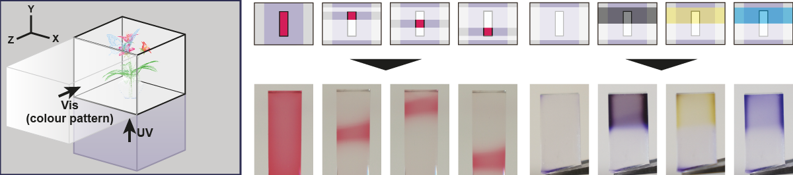

|
Ryuji Hirayama, Atsushi Shiraki, Makoto Naruse, Shinichiro Nakamura, Hirotaka Nakayama, Takashi Kakue, Tomoyoshi Shimobaba, and Tomoyoshi Ito, Scientific Reports 6, 31543 (2016) [Paper link]. |
|  |
|
This is the first study to demonstrate that colour transformations in the volume of a photochromic material (PM) are induced at the intersections of two control light channels, one controlling PM colouration and the other controlling decolouration. Thus, PM colouration is induced by position selectivity and therefore, a dynamic volumetric display may be realised using these two control lights. Moreover, a mixture of multiple PM types with different absorption properties exhibits different colours depending on the control light spectrum. Particularly, the spectrum management of the control light allows colour-selective colouration besides position selectivity. Therefore, a PM-based, full-colour volumetric display is realised. We experimentally construct a mixture of two PM types and validate the operating principles of such a volumetric display system. Our system is constructed simply by mixing multiple PM types; therefore, the display hardware structure is extremely simple and the minimum size of a volume element can be as small as the size of a molecule. Volumetric displays can provide natural three-dimensional (3D) perception; therefore, the potential uses of our system include high-definition 3D visualisation for medical applications, architectural design, human–computer interactions, advertising and entertainment. |